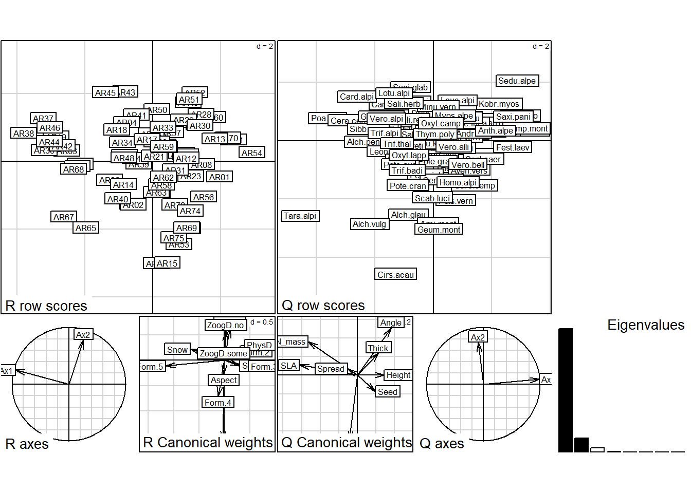
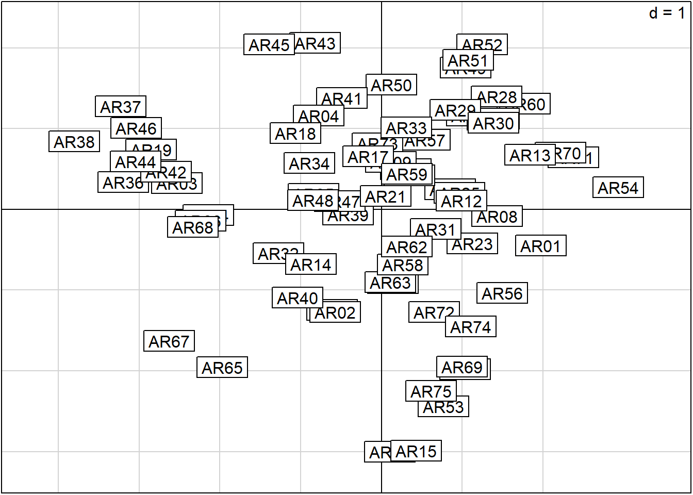
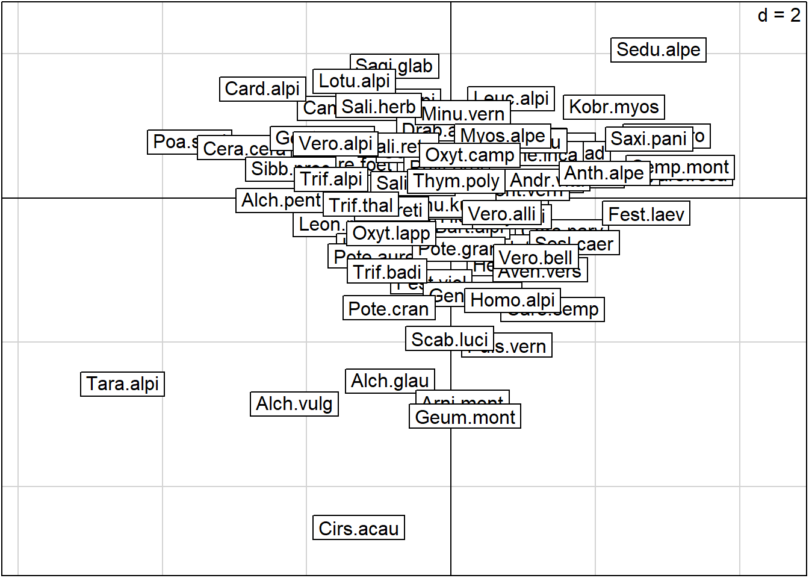
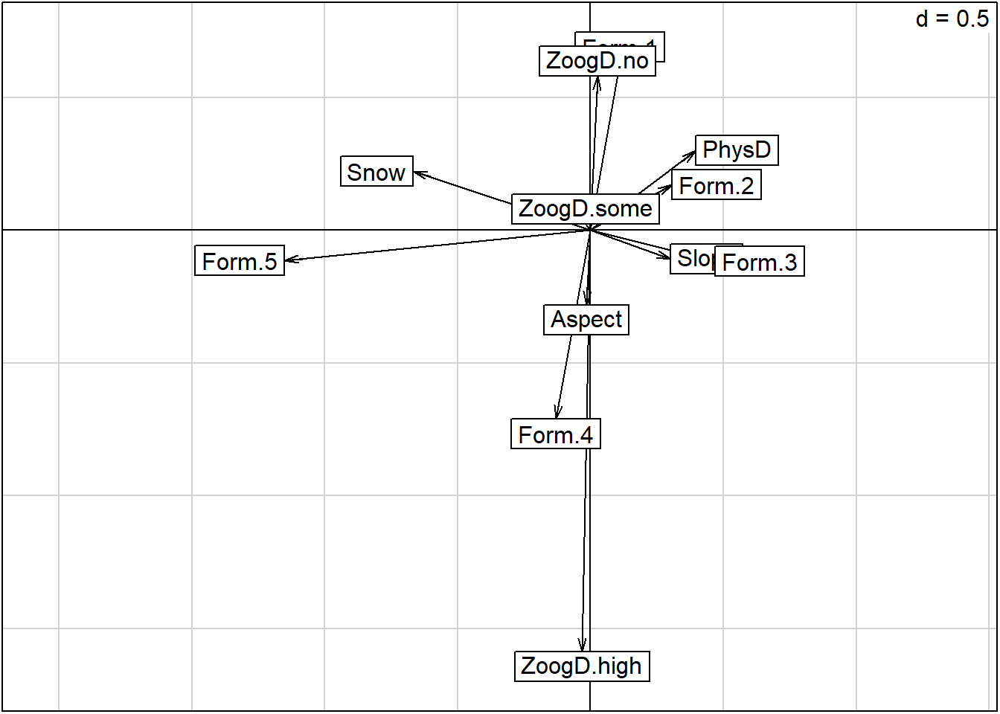
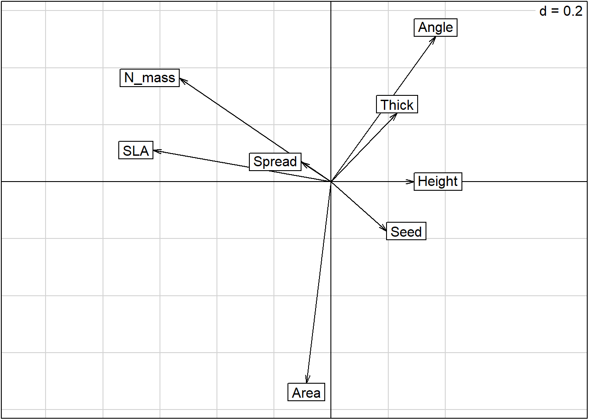
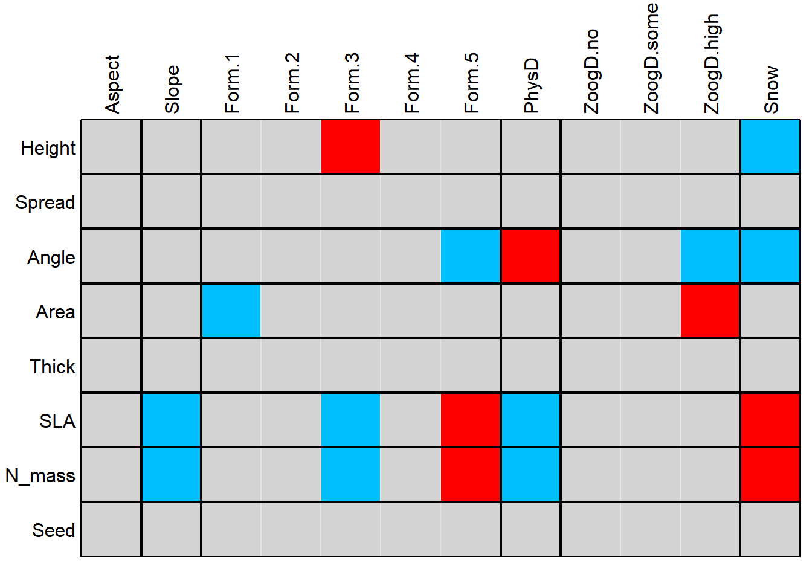

library(here)
library(tidyverse)
library(ade4)
rm(list = ls())Analysis of Ecological Data
RLQ Analysis
1 Technichal University of Munich, TUM School of Life Sciences, Chair of Restoration Ecology, Emil-Ramann-Straße 6, 85354 Freising, Germany
 https://orcid.org/0000-0001-5372-4174
https://orcid.org/0000-0001-5372-4174


2 University of Applied Sciences Weihenstephan-Triesdorf, Institute of Ecology and Landscape, Am Hofgarten 1, Building A10, 85354 Freising, Germany

The tutorial is based on Borcard et al. (2018, 6.11.2)
1 Preparation
1.1 Load libraries and functions
We need the ade4 package of Dray & Dufour (2007) to apply the RLQ analysis of Dolédec et al (1996)
1.2 Load data
The example proposed here is extracted from a tutorial written by Stéphane Dray and provided as a Supplement to the Dray et al. (2014) paper (ESA Ecological Archives E095–002-S1). The example concerns the ecological data analysed in the Dray et al. (2014) paper, which describes the response of plant traits to a snow-melting gradient in the French Alps. The main question is: how does the snow cover duration, with all its consequences, impact the alpine grasslands, as assessed by functional traits of the plant species?
The data come from 75, 5 x 5 m plots located in the South-Western Alps at about 2700 m elevation. They consist in the three following matrices: community composition (82 species, abundance scale from 0 to 5), traits (8 quantitative variables) and environment (4 quantitative and 2 categorical variables). To simplify this presentation, only some of the variables that are identified as significant are presented below. Readers are referred to Dray et al. (2014) and Choler (2005) for a more complete interpretation of the results. The data are available in ade4.
data(aravo)
species_spain <- read_delim(
here::here("data", "raw", "bello_etal-2021", "chapter5", "speciesXplotsNE.txt"),
col_names = TRUE, delim = "\t", col_types = cols(.default = "?")
) %>%
pivot_longer(-species) %>%
pivot_wider(names_from = "species", values_from = "value") %>%
column_to_rownames(var = "name")
traits_spain <- read_delim(
here::here("data", "raw", "bello_etal-2021", "chapter5", "speciesXtraitsNE.txt"),
col_names = TRUE, delim = "\t", col_types = cols(.default = "?")
) %>%
column_to_rownames(var = "species")
sites_spain <- read_delim(
here::here("data", "raw", "bello_etal-2021", "chapter5", "environXplotsNE.txt"),
col_names = TRUE, delim = "\t", col_types = cols(.default = "?")
) %>%
column_to_rownames(var = "Plots")
species_ammer <- read_csv(
here("data", "processed", "data_processed_species_ammer_4.1.csv"),
col_names = TRUE, col_types = cols(.default = "?")
)
traits_ammer <- read_csv(
here("data", "processed", "data_processed_traits_ammer_4.1.csv"),
col_names = TRUE, col_types = cols(.default = "?")
)
sites_ammer <- read_csv(
here("data", "processed", "data_processed_sites_ammer_4.5.csv"),
col_names = TRUE, col_types = cols(.default = "?")
)2 RLQ Analysis
2.1 Aravo data
2.1.1 Apply the RLQ analysis
The method works upon three separate ordinations, one for each data matrix and adapted to its mathematical type, and combines the three to identify the main relationships between the environment and the traits, as mediated by the species. It computes a generalized singular value decomposition of the fourth-corner matrix D (Dray et al. 2014). For the first ordination axis, RLQ finds coefficients for the environmental variables and species traits. These coefficients measure the contributions of individual variables and are used to compute site and species scores; they are chosen to maximize the first eigenvalue. The analysis proceeds in the same way for the next, orthogonal ordination axes. For mathematical details see Dray et al. (2014).
After having loaded the data, the first step of the RLQ analysis is to compute separate ordinations of the three data sets, which are computed by function rlq() of ade4 package. The ordination methods are chosen in accordance with the mathematical types of the variables. Here, following Dray et al. (2014), we compute a correspondence analysis (CA) on the species data, a principal component analysis (PCA) on the (quantitative) trait data; for the environmental data, which are quantitative and categorical, we will apply a special type of PCA that can handle such types of data, called a Hill-Smith analysis (Hill and Smith 1976).
The RLQ analysis is then computed on the basis of the three ordinations.
dim(aravo$spe)[1] 75 82dim(aravo$traits)[1] 82 8dim(aravo$env)[1] 75 6# Preliminary analyses
l_aravo <- dudi.coa(aravo$spe, scannf = FALSE)
r_aravo <- dudi.hillsmith(aravo$env, row.w = l_aravo$lw, scannf = FALSE)
q_aravo <- dudi.pca(aravo$traits, row.w = l_aravo$cw, scannf = FALSE)Apply the RLQ analyis:
m1 <- rlq(
dudiR = r_aravo,
dudiL = l_aravo,
dudiQ = q_aravo,
scannf = FALSE
)A single plot() command allows one to plot all results in a single graphical window, but the individual plots are rather crowded, so we also provide the code to plot the results separately.
plot(m1)
m1$tab # Traits by environment crossed table Height Spread Angle Area Thick
Aspect -0.045735104 -0.044170141 -0.09083720 0.031237858 -0.05846614
Slope 0.094917344 -0.017325425 0.10028197 -0.003864605 0.07415182
Form.1 -0.073770286 0.026039390 0.14215018 -0.225313466 0.11572805
Form.2 -0.010911331 -0.100446093 0.16807508 -0.120331757 0.03864688
Form.3 0.233960654 -0.068975646 0.18296508 0.012061050 0.13483093
Form.4 -0.086529686 -0.058073850 -0.23974216 0.142160619 -0.15198206
Form.5 -0.252340378 0.220918447 -0.43798612 0.247700338 -0.30735550
PhysD 0.113164322 -0.051680330 0.22138008 -0.134371361 0.14316173
ZoogD.no 0.124267509 0.012175895 0.15202700 -0.137974965 0.03391263
ZoogD.some -0.149543344 -0.008373275 -0.03745347 -0.051242752 0.01221228
ZoogD.high 0.006993334 -0.013438166 -0.31869900 0.480953816 -0.11735229
Snow -0.271739531 0.065634673 -0.26961376 -0.024574466 -0.15466014
SLA N_mass Seed
Aspect -0.007694551 -0.061575524 0.01159843
Slope -0.235864886 -0.201308154 0.07707397
Form.1 -0.085532690 0.003024247 0.02201012
Form.2 -0.246531063 -0.225091274 -0.02010957
Form.3 -0.328895353 -0.290591512 0.09090024
Form.4 0.043829953 -0.044209280 0.02986325
Form.5 0.887669867 0.755913589 -0.22660391
PhysD -0.275524984 -0.212434381 0.07815631
ZoogD.no 0.034928046 0.099790495 -0.02157176
ZoogD.some -0.024512275 -0.037432290 -0.03230914
ZoogD.high -0.037441256 -0.180296100 0.12984602
Snow 0.481181824 0.429271163 -0.17764072Since the plots are crowded, one can plot them one by one in large graphical windows.
# Site (L) scores:
s.label(m1$lR)
# Species (Q) scores
s.label(m1$lQ)
# Environmental variables:
s.arrow(m1$l1)
# Species traits:
s.arrow(m1$c1)
The script below concludes with a global “model 6” test (after ter Braak et al. 2012). The two tests included in “model 6” yielded a combined p-value = 0.001, hence the null hypothesis is rejected, which means that both links, L-Q and R-L, are significant.
The permutation models are the following, considering matrix L (or A) with observations in the rows and species as columns:
Model 2: environmental control over species assemblages. Permute entire rows of matrix L (A). H0 states that the species compositions of the sites are unrelated to the environmental conditions. This model considers that species assemblages must be taken as whole entities, which are preserved through the permutations, and react as such to environmental constraints.
Model 4: random species attributes. Permute entire columns of matrix L (A). H0 states that species are distributed according to their preferences for site conditions (this is preserved through the permutations), but independently from their traits.
Model 6: this is actually a combination of models 2 and 4. A first form of this combination was proposed by Dray and Legendre (2008), who noted, however, that it suffered from a strong inflation of type I error rate when L (A) is only linked to one other table (R or Q). Ter Braak et al. (2012) proposed to overcome this problem by considering the two tests sequentially and rejecting the overall null hypothesis (i.e., traits and environment unrelated) only if both tests (models 2 and 4) reject H0 at the alpha level. The maximum p-value becomes the overall p-value. These authors showed that this procedure ensures a correct level of type I error and a good power if the number of species is sufficient (at least 30).
randtest(m1, nrepet = 999, modeltype = 6)class: krandtest lightkrandtest
Monte-Carlo tests
Call: randtest.rlq(xtest = m1, nrepet = 999, modeltype = 6)
Number of tests: 2
Adjustment method for multiple comparisons: none
Permutation number: 999
Test Obs Std.Obs Alter Pvalue
1 Model 2 1.57836 27.62959 greater 0.001
2 Model 4 1.57836 13.25559 greater 0.001The results are interpreted as follows by Dray et al. (2014): “The left (negative) part of the first RLQ axis identifies species (Poa supina, Alchemilla pentaphyllea, or Taraxacum alpinum) with higher specific leaf area (SLA) and mass-based leaf nitrogen content (NMass), lower height, and a reduced seed mass. These species were mostly found in late-melting habitats. The right part of the axis highlights trait attributes (upright and thick leaves) associated with convex landforms, physically disturbed and mostly early-melting sites. Corresponding species are Sempervivum montanum, Androsace adfinis, or Lloydia serotina. The second RLQ axis outlined zoogenic disturbed sites located in concave slopes. These habitats were characterized by large-leaved species (Cirsium acaule, Geum montanum, Alchemilla vulgaris).”
2.1.2 Repetition: Fourth-corner analysis
The same data will now be submitted to a fourth-corner analysis, which provides tests at the bivariate level, i.e. one trait and one environmental variable at a time. This is where the correction for multiple tests is necessary. Given the large number of permutations needed to reach an adequately precise estimation of the p-value, the most astute way of computing this analysis consists in a first computation without any correction for multiple testing. The resulting object can be corrected afterwards. So, if several types of corrections must be examined, there is no need to recompute the whole analysis and its large and time-consuming number of permutations.
The fourth-corner analysis is computed by means of the function fourthcorner() of ade4, using model 6 advocated by Dray et al. (2014).
fourth.aravo <- fourthcorner(
tabR = aravo$env,
tabL = aravo$spe,
tabQ = aravo$traits,
modeltype = 6,
p.adjust.method.G = "none",
p.adjust.method.D = "none",
nrepet = 49999
)The correction for multiple testing is taken care of by the function p.adjust.4thcorner(), which operates on the output object of the analysis. Here the false discovery rate is used (FDR).
fourth.aravo.adj <- p.adjust.4thcorner(
fourth.aravo,
p.adjust.method.G = "fdr",
p.adjust.method.D = "fdr",
p.adjust.D = "global"
) We will first plot the results as a table with coloured cells.
plot(fourth.aravo.adj, alpha = 0.05, stat = "D2")
This representation allows a detailed interpretation. For instance, SLA (specific leaf area) and N_mass (mass-based leaf nitrogen content) are positively associated with Snow (mean snow melt date) and Form.5 (concave microtopography), features that can also be observed in the ordination. This shows that these traits are likely to favor species that tolerate a longer period of snow cover: a higher nitrogen content, partly due to nitrogen storage in snowpacks and partly to the protective effect of snow on soil temperature and water content (Choler 2005), warrants larger reserves, and a larger leaf area allows a larger rate of photosynthesis once the plant iseventually exposed to the sun. Conversely, these two traits are negatively associated with PhysD (physical disturbance due to cryoturbation), which tends to occur more often in areas without snow and therefore more exposed to large temperature oscillations.
3 Session info
sessionInfo()R version 4.4.1 (2024-06-14 ucrt)
Platform: x86_64-w64-mingw32/x64
Running under: Windows 11 x64 (build 22631)
Matrix products: default
locale:
[1] LC_COLLATE=German_Germany.utf8 LC_CTYPE=German_Germany.utf8
[3] LC_MONETARY=German_Germany.utf8 LC_NUMERIC=C
[5] LC_TIME=German_Germany.utf8
time zone: Europe/Berlin
tzcode source: internal
attached base packages:
[1] stats graphics grDevices datasets utils methods base
other attached packages:
[1] ggrepel_0.9.5 ade4_1.7-22 lubridate_1.9.3 forcats_1.0.0
[5] stringr_1.5.1 dplyr_1.1.4 purrr_1.0.2 readr_2.1.5
[9] tidyr_1.3.1 tibble_3.2.1 ggplot2_3.5.1 tidyverse_2.0.0
[13] here_1.0.1
loaded via a namespace (and not attached):
[1] utf8_1.2.4 generics_0.1.3 renv_1.0.7
[4] stringi_1.8.4 hms_1.1.3 digest_0.6.36
[7] magrittr_2.0.3 evaluate_0.24.0 grid_4.4.1
[10] timechange_0.3.0 fastmap_1.2.0 rprojroot_2.0.4
[13] jsonlite_1.8.8 BiocManager_1.30.25 fansi_1.0.6
[16] scales_1.3.0 cli_3.6.3 crayon_1.5.3
[19] rlang_1.1.4 bit64_4.0.5 munsell_0.5.1
[22] withr_3.0.0 yaml_2.3.9 parallel_4.4.1
[25] tools_4.4.1 tzdb_0.4.0 colorspace_2.1-0
[28] vctrs_0.6.5 R6_2.5.1 lifecycle_1.0.4
[31] htmlwidgets_1.6.4 bit_4.0.5 vroom_1.6.5
[34] MASS_7.3-60.2 pkgconfig_2.0.3 pillar_1.9.0
[37] gtable_0.3.5 glue_1.7.0 Rcpp_1.0.12
[40] xfun_0.45 tidyselect_1.2.1 rstudioapi_0.16.0
[43] knitr_1.48 farver_2.1.2 htmltools_0.5.8.1
[46] labeling_0.4.3 rmarkdown_2.27 compiler_4.4.1